|
|
|
green seaweeds text index | photo
index
|
| Seaweeds > Division Chlorophyta > Family Halimedaceae > Genus Halimeda |
| Small
coin green seaweed Halimeda sp.* Family Halimedaceae updated Jan 13 Where seen? This is seaweed made up of small, hard segments. It is commonly seen on many of our shores, usually growing on coral rubble or among living corals. Features: An upright chain (3-5cm long) of joined up coin-like flattened segments. Each coin-like segment is hard as it is impregnated with calcium carbonate. Small coin green seaweeds have small segments about 1cm or less. In some, clusters of these chains are held up on a stalk that is buried. Colours range from light to bright green and olive green. Sometimes rather large 'thickets' may form, covering an area of 40-50cm. In Halimeda opuntia, the joined-up segments are not held up on stalks. The segments tend to develop holdfasts where they contact with a hard surface so that the growth habit tends to be more horizontal than vertical. Big coin green seaweeds have larger 'coins' that tend to be thinner and unwrinkled. Human uses: Some species of Halimeda are used as fertilizers to recondition acidic soils. They are also used as animal feed and reportedly have anti-bacterial and anti-fungal properties. |
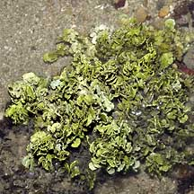 St. John's Island, May 06 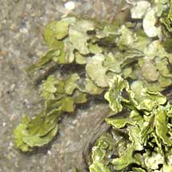 |
| Small coin green seaweeds on Singapore shores |
|
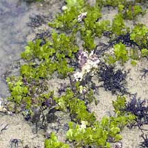 Sentosa, Jul 04 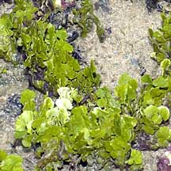 |
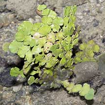 Sentosa, Jul 05 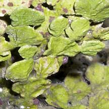 |
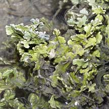 Pulau Semakau, Sep 05 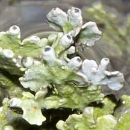 |
*Species are difficult to positively identify without close examination of internal parts.
On this website, they are grouped by external features for convenience of display
| Small coin green seaweeds on Singapore shores |
| Photos of Small coin green seaweeds for free download from wildsingapore flickr |
| Distribution in Singapore on this wildsingapore flickr map |
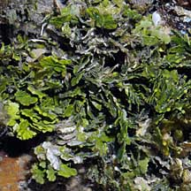 Pulau Salu, Jun 10 |
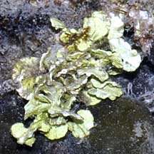 Pulau Senang, Jun 10 |
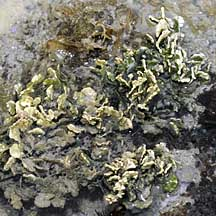 Terumbu Berkas, Jan 10 |
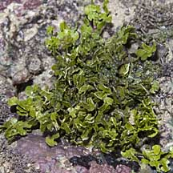 Terumbu Selegie, Jun 11 |
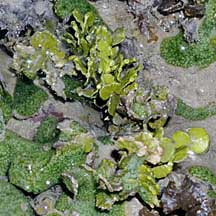 Terumbu Pempang Darat, Jun 10 |
Links
References
|
|
|